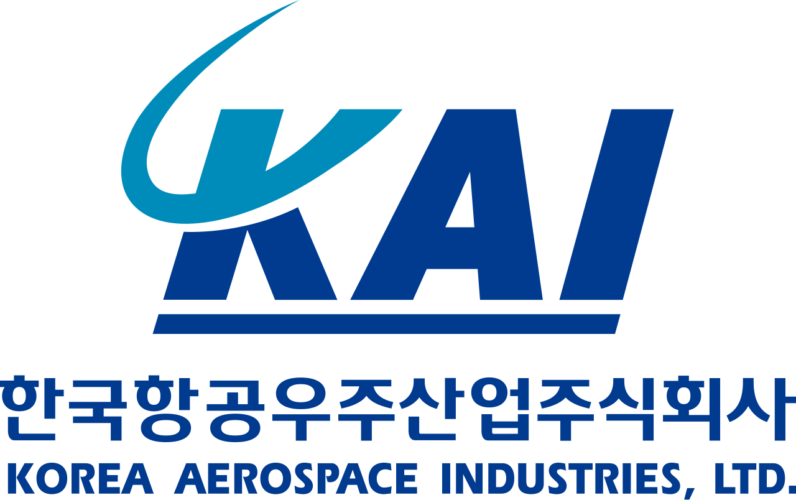

홈 > 브랜드 매거진 > 한국항공우주산업
한국항공우주산업
한국항공우주산업(KAI)은 군용·민수 항공기와 우주발사체를 종합 개발·생산하는 대한민국의 항공우주 전문기업이다.
산업 분야 브랜드·비즈니스 · 공개 등급 자료 기반 · 브랜드 평가 4.2 ★

한눈에 보는 브랜드
한국항공우주산업(KAI)은 외환위기 직후 정부 주도 빅딜로 현대·삼성·대우의 항공 부문을 통합해 1999년 10월 출범한 국내 유일의 완제기 종합 제작사다. 경상남도 사천에 본사를 두고 최대주주는 국책은행인 한국수출입은행이다.
출범 직후 고등훈련기 T-50 독자 개발, 그리고 2010년대 한국형 전투기 KF-21 보라매 사업 착수라는 두 전환점을 거치며 단순 부품 하청에서 자체 기종 설계·수출 기업으로 도약했다. 2025년 수주잔고는 27조원대, 2026년 매출 목표는 5조원대로, 창사 이래 최대 규모의 성장 국면에 들어섰다.
브랜드 관점
KAI의 차별점은 경쟁사와 결이 다르다. 한화에어로스페이스가 K-9 자주포·천무, LIG넥스원이 천궁 등 지상·유도무기로 중동·유럽을 공략하는 반면, KAI는 하늘을 책임지는 완제 항공기 사업자라는 독보적 위치를 점한다.
핵심 전략은 두 축이다. 첫째, 검증된 가성비 완제기 FA-50을 폴란드·필리핀·말레이시아 등 6개국 140여 대로 확산시켜 현금흐름을 확보한다.
둘째, KF-21 보라매를 체계개발에서 본격 양산으로 전환해 4.5세대 자국산 전투기 보유국이라는 기술 위상을 굳힌다. 최근 변화의 함의는 분명하다.
한국이 세계 무기 수출 4위권으로 올라선 K-방산 슈퍼사이클에서, 미국 훈련기 사업과 단좌형 FA-50, 사우디 KF-21 논의까지 겹치며 KAI는 내수 의존 방산기업에서 글로벌 항공 플레이어로 재정의되는 갈림길에 서 있다.
시작과 성장
KAI의 뿌리는 1997년 외환위기다. 만성 적자에 시달리던 항공 사업은 대기업 구조조정의 표적이 됐고, 정부는 빅딜 2호로 현대우주항공·삼성항공우주산업·대우중공업의 항공기 부문을 한데 묶었다.
그렇게 탄생한 회사가 국군의 날인 1999년 10월 1일 출범한 한국항공우주산업이다. 흩어져 경쟁하던 역량을 하나로 모아 국가 항공산업의 명맥을 지킨 것이 출발점이었다.
첫 전환점은 초음속 고등훈련기 T-50 골든이글의 독자 개발이다. 부품 제작에 머물던 회사가 완제기를 설계·생산하는 단계로 올라서며, 이후 FA-50 경공격기 수출의 토대가 됐다.
두 번째 전환점은 한국형 전투기 KF-21 보라매 사업이다. 시제기 비행에 성공하고 양산으로 넘어가면서 KAI는 4.5세대 전투기를 자체 개발하는 소수 기업군에 진입했다.
본사는 서울 서소문에 있다가 2005년 생산 거점인 경남 사천으로 이전했고, 이후 회전익기 수리온, 소형무장헬기, 누리호 발사체 체계종합으로 사업을 확장하며 항공에서 우주로 영역을 넓혀 왔다.
브랜드 아이덴티티
KAI가 내세우는 핵심 가치는 미래를 향한 힘찬 비상과 인류의 풍요로운 미래 개척이다. 비주얼 아이덴티티는 사명 머리글자 K·A·I를 조합한 워드마크로, K의 윗부분을 우주 형상으로 처리해 세계를 잇는 범우주적 기업을 표현하고, 글자 전체를 이탤릭으로 기울여 항공우주 특유의 속도감과 방향성을 담았다.
메인 컬러 KAI 블루는 첨단 산업의 미래지향성을, 보조색 스카이블루는 맑은 하늘과 꿈·이상을 상징한다. 타깃은 각국 공군과 국방 당국, 글로벌 항공기 제작사, 정부 우주개발 기관 같은 기관 고객이다.
브랜드 보이스는 신뢰·기술력·도전을 축으로 한 묵직하고 절제된 톤으로, 안보 파트너이자 첨단 기술 기업이라는 두 정체성을 일관되게 드러낸다.
제품과 서비스
포트폴리오는 세 갈래다. 군용 항공기로는 4.5세대 한국형 전투기 KF-21 보라매, 베스트셀러 경공격기 FA-50과 고등훈련기 T-50, 기본훈련기 KT-1을 갖췄다.
회전익에서는 기동헬기 수리온(KUH-1)과 소형무장헬기를 양산한다. 우주 분야에서는 누리호 발사체 체계종합과 위성 사업을 수행한다.
여기에 보잉·에어버스용 민항기 기체구조물과 eVTOL 부품이 더해진다. 채널은 정부 대 정부(G2G) 방산 수출과 국내 군 조달, 글로벌 제작사 대상 구조물 공급으로 구성된다.
현재 상태
본사는 경상남도 사천시에 있으며, 최대주주는 국책은행인 한국수출입은행이고 국민연금공단이 2대 주주로, 민영기업이지만 국책은행이 지배하는 구조다. 과거 산업은행 보유 지분이 수출입은행으로 현물출자되며 대주주가 바뀌었다.
2024년 실적은 수주 약 4조9천억원, 매출 약 3조6천억원, 영업이익 약 2천4백억원이며 연말 수주잔고는 약 24조7천억원이다. 2025년 영업이익은 약 2천6백억원으로 전년 대비 11.8% 증가했고 수주잔고는 27조원대로 확대됐다.
회사는 2026년 매출 5조원대, 수주 10조원대 목표를 제시했다. 폴란드 FA-50 잔여 물량과 필리핀·말레이시아 수출, KF-21 양산 전환이 핵심 동력이다.
그 밖의 미확정 사안은 미공개다.
타임라인
정리된 연도형 이벤트가 없습니다.
BI/CI 변천사
함께 읽을 브랜드
 브랜드·비즈니스 · 자료 기반한화에어로스페이스
브랜드·비즈니스 · 자료 기반한화에어로스페이스한화에어로스페이스(Hanwha Aerospace)는 항공기 엔진·우주발사체·지상방산을 주력으로 하는 한화그룹의 방위산업 핵심 기업이다.
 브랜드·비즈니스 · 자료 기반LIG넥스원
브랜드·비즈니스 · 자료 기반LIG넥스원LIG넥스원(LIG Nex1)은 정밀유도무기·감시정찰·항공전자를 주력으로 하는 LIG그룹의 방위산업 전문기업이다.
KI
한국투자증권
브랜드·비즈니스 · 자료 기반한국투자증권한국투자증권은 한국투자금융지주가 지분 전량을 보유한 핵심 자회사로, 뿌리는 1974년 국내 최초 투자신탁 전업사로 출범한 한국투자신탁에 닿아 있다. 2003년 한국투...
BO
BOC
브랜드·비즈니스 · 편집 검수BOCBOC는 1967년에 기록된 Designed by Wolff Olins 계열의 브랜드 아이덴티티 사례입니다. Wolff Olins가 아이덴티티 작업의 디자이너로 기록...
 브랜드·비즈니스 · 편집 검수Bose
브랜드·비즈니스 · 편집 검수BoseBose는 2024년에 기록된 Designed by Collins 계열의 브랜드 아이덴티티 사례입니다. Collins가 아이덴티티 작업의 디자이너로 기록되어 있습니다...
Ch
Church
브랜드·비즈니스 · 편집 검수ChurchChurch는 2025년에 기록된 Designed by Porto Rocha 계열의 브랜드 아이덴티티 사례입니다. Porto Rocha가 아이덴티티 작업의 디자이너로...
 브랜드·비즈니스 · 편집 검수Citibank
브랜드·비즈니스 · 편집 검수Citibank씨티(Citi)는 미국 씨티그룹이 운영하는 글로벌 소비자·기업 금융 브랜드로, 1812년 뉴욕에서 출발한 시티뱅크 오브 뉴욕을 뿌리로 한다. 빨강 아치가 워드마크 위...
 브랜드·비즈니스 · 편집 검수Dunkin'
브랜드·비즈니스 · 편집 검수Dunkin'Dunkin'는 2018년에 기록된 Designed by jkr 계열의 브랜드 아이덴티티 사례입니다. jkr, Colophon가 아이덴티티 작업의 디자이너로 기록되어...